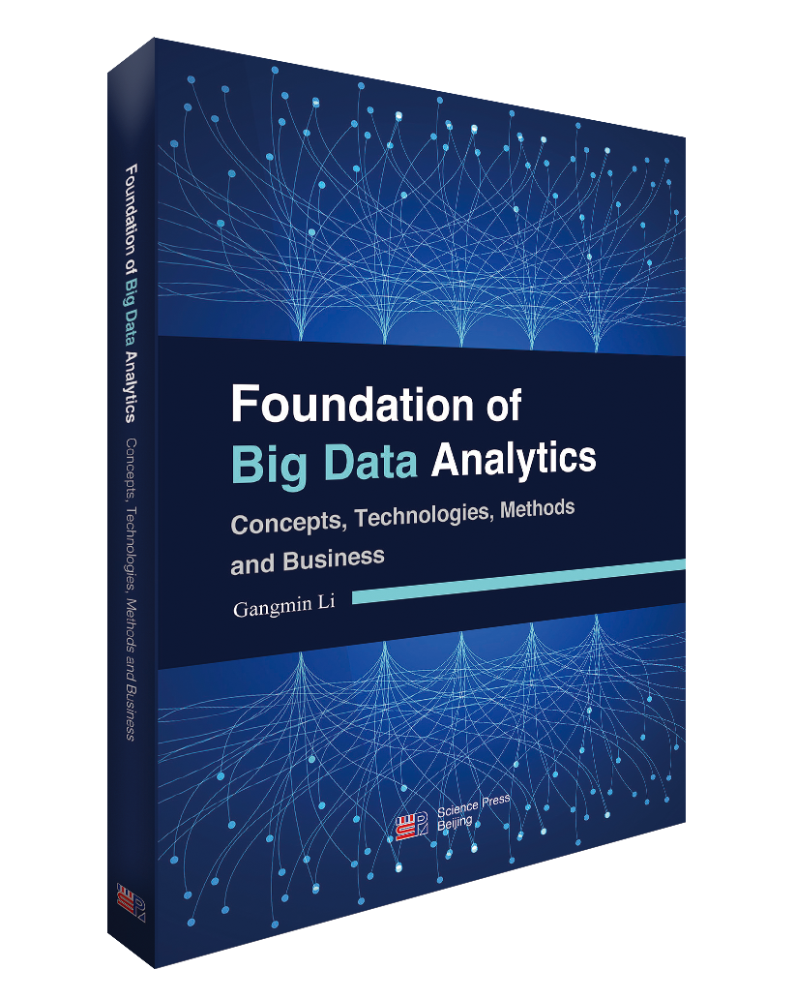

CREATIVE WORKS
Research Areas
- Data Science
- Big Data: See my book:  "Foundation for Big Data Analytics: Concepts, Technologies, Methods and Business" (ISBN: 978-7-03-058148-8)
- Machine Learning
- Web Science
- NLP
- Knowledge Engineering
Research Grants
-
KSF, KSF-A-027, 1,000,000RMB, “Research on intelligent investigation system using deep
learning and knowledge graph”. 2019, 9 -
-
Suzhou Advanced Tech Research, SYG201840, 50,000, 2018.7.1-2020.6.30. “Doctors’ assistant
by advanced Voice recognition and AI technologies”.
-
RIBDA grunt 14,000, 2018.1.1-2018.12.31. “Big Data methods for medical record autogeneration”.
-
Accenture, LLP (USA), $20,000. 2017.7.1-2019.6.30. “Knowledge network construction and
services for knowledge intensive organisations”.
-
RIBDA, 24,000. 2017.3.1-2018.2.28. “the effectiveness of TIVAP cancer treatment assessment
using BDA”, collaborated with the 2nd General hospital Suzhou.
-
2 RDFs, RDF-11-035, RDF-11-036, (100,000RMB + two studentships worth 700,000RMB). “Big
Data Analytical Platform” and “Knowledge Graph Embeddings”, 2017,4-2021,9, 2019.4 – 2022.4
Completed and Continue Research Projects
-
“Public Security Case Records understanding with Machine Learning and Knowledge Graph”,
Pricinple Onvestigater (PI), 2018-2021, complete.
-
“Hearth Records generation and recognition for Medical care”, PI, 2018-2020, Complete.
-
"Big Data analytical platform research using multiple agents approaches”, PI, 2017-2021,
complete.
-
“Tacit Knowledge capture using Knowledge Graph”, PI, 2018-
-
“Video content understanding and recommendation”, PI, 2018-
-
“Knowledge Graph construction and alignment for knowledge intensive orgnisations”, PI,
2017-2019, complete.
Professional Membership
- IEEE
- IEEE Computer Society
{{ site.data.ui-text[site.locale].back_to_top | default: 'Back to Top' }} ↑